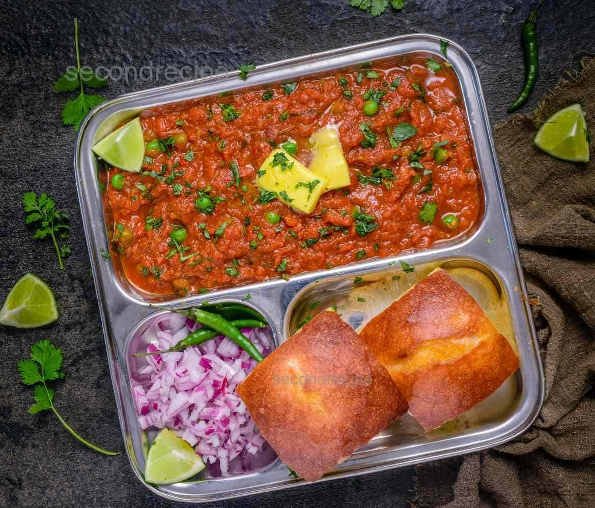

Pav Bhaji

When it comes to good pav bhaji Mumbai streets are the best
place to get it. This recipe gives you all the satisfaction
of the tantalizing flavours of pav bhaji in your home and
ready to use pav bhaji masala makes things much easier. Do
not forget a good dollop of butter just before serving this
mashed mixed vegetable sabzi with pav.
Ingredients
- Pavs 8
- Potatoes boiled and mashed 2 cups
- Cauliflower grated 3 tablespoons
- Capsicum finely chopped 1/4 cup
- Oil 3 tablespoons
- Onions chopped 1 cup
- Ginger-garlic paste 1 1/2 teaspoons
- Tomato puree fresh 1 cup
- Readymade tomato puree 1/4 cup
- Salt to taste
- Pav Bhaji masala 1 1/2 tablespoons
- Red chilli powder 1/2 teaspoon
- Lemon juice 2 teaspoons
- Butter 2 tablespoons
- A few sprigs fresh coriander leaves
- A lemon slice